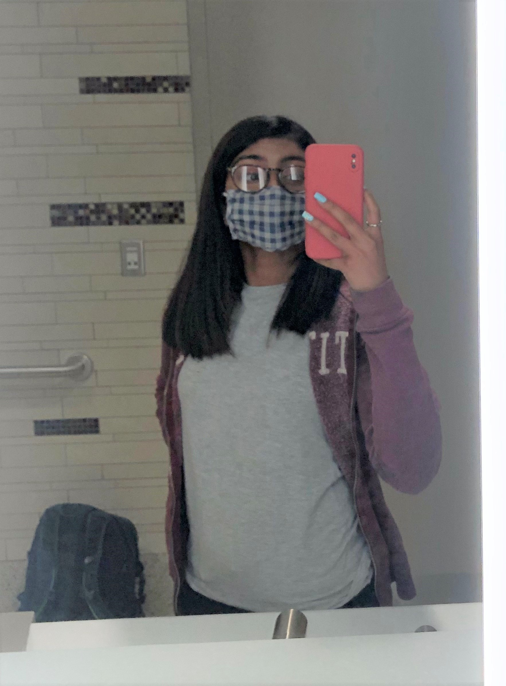
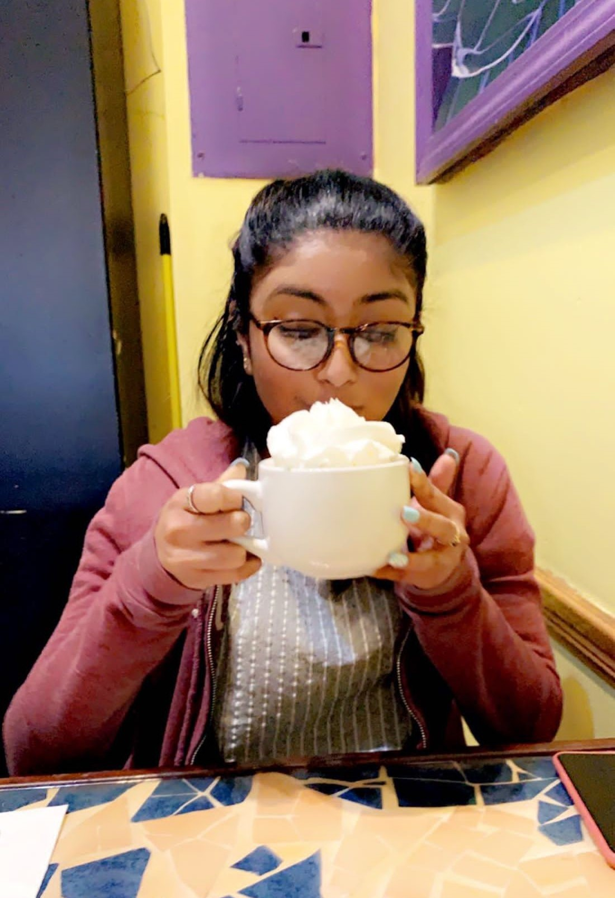
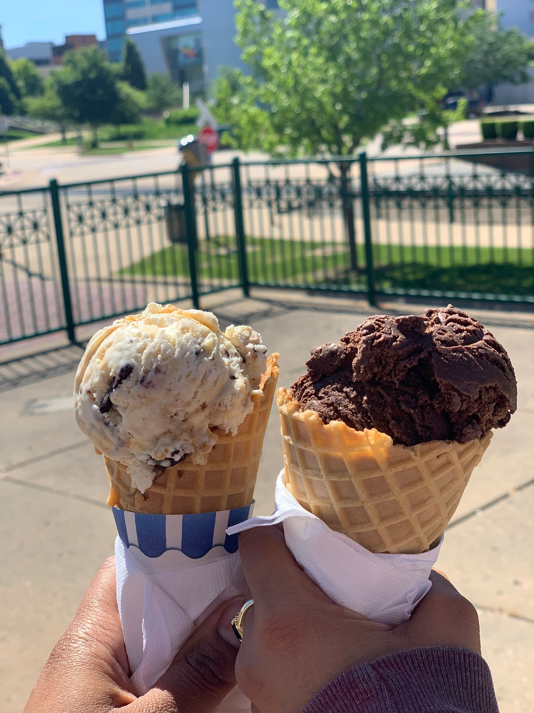
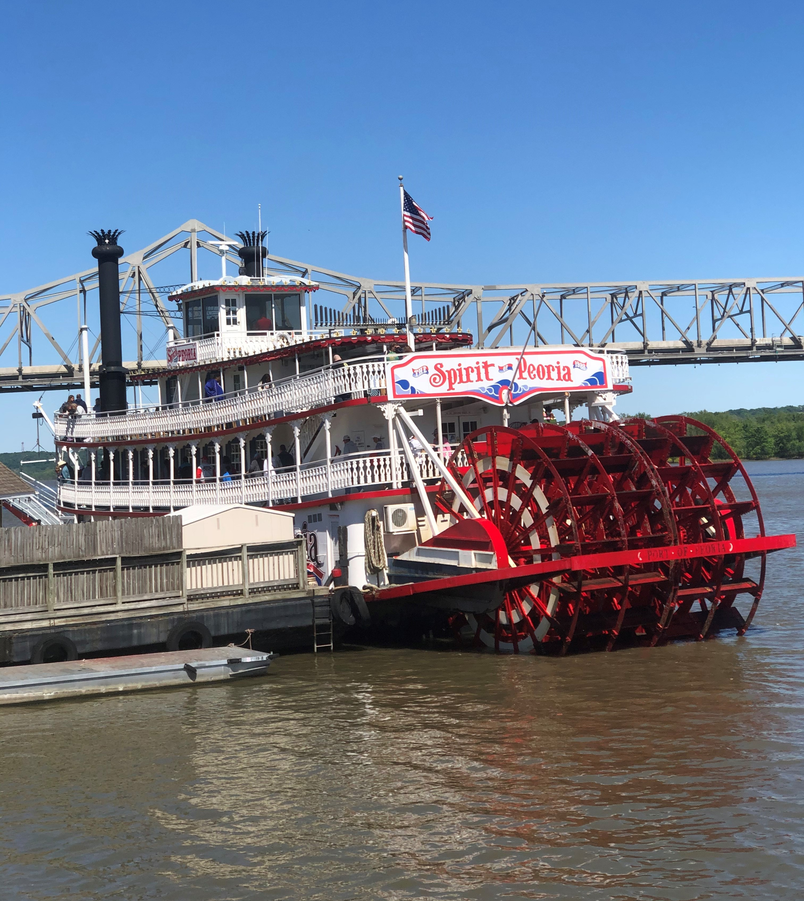
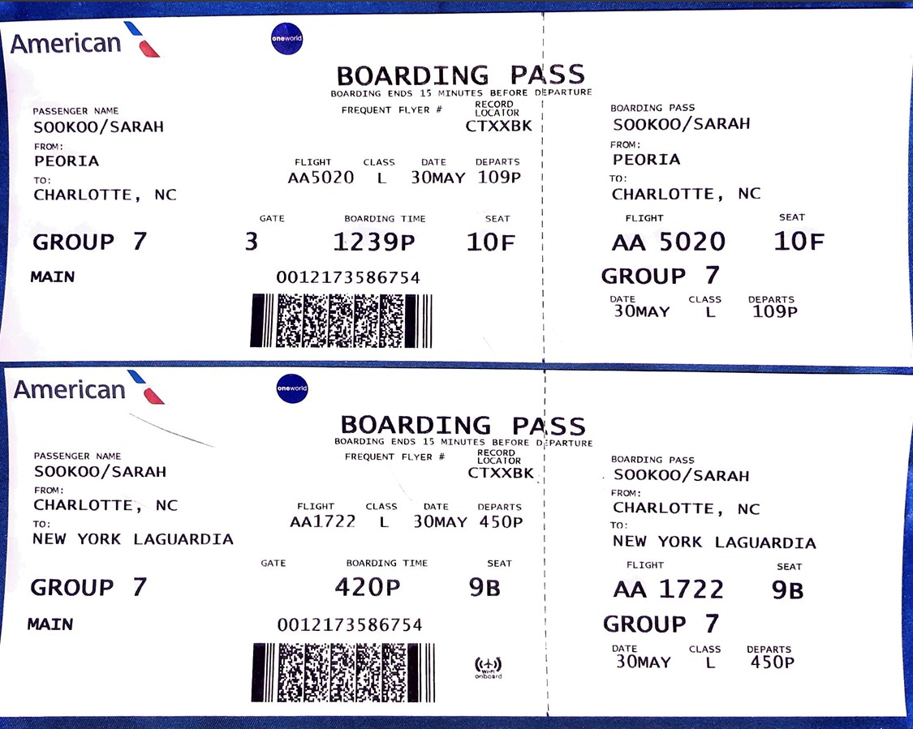
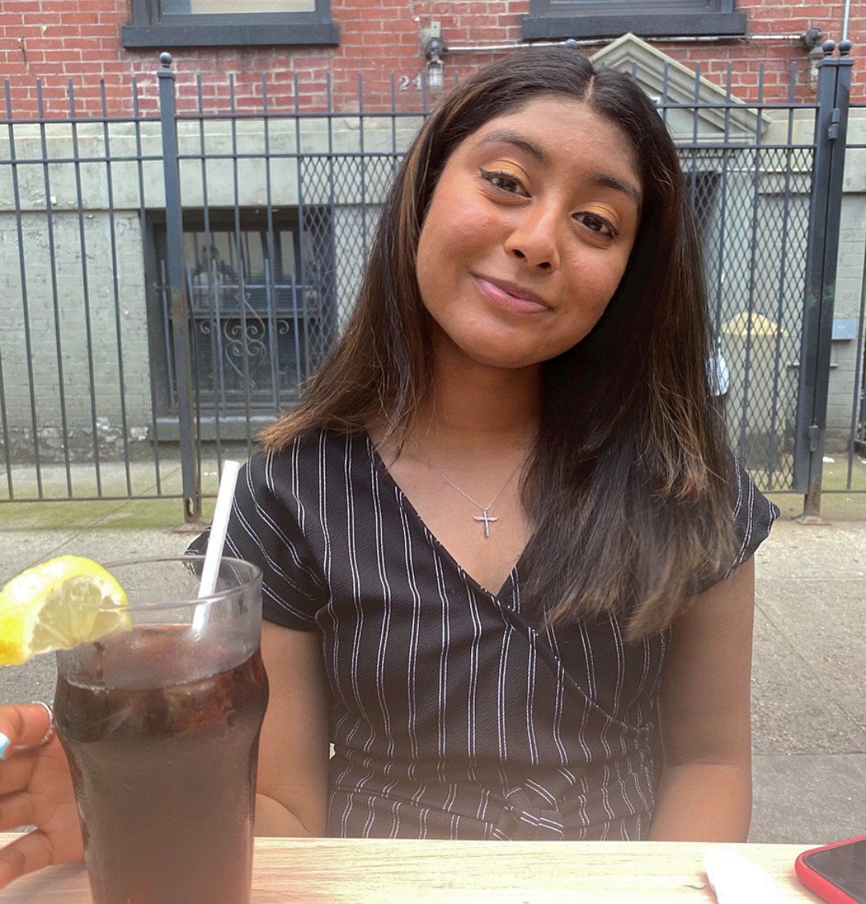
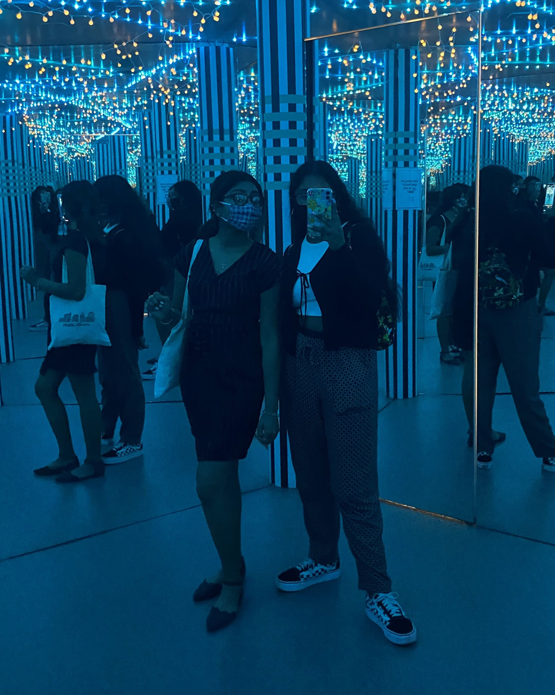
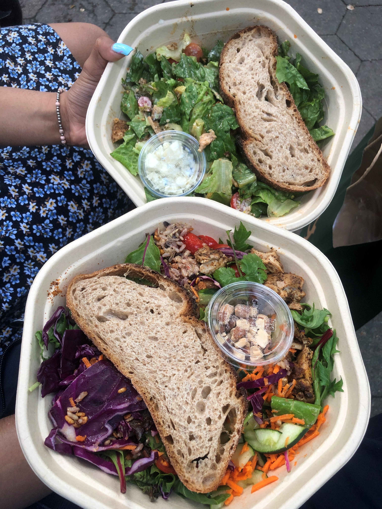
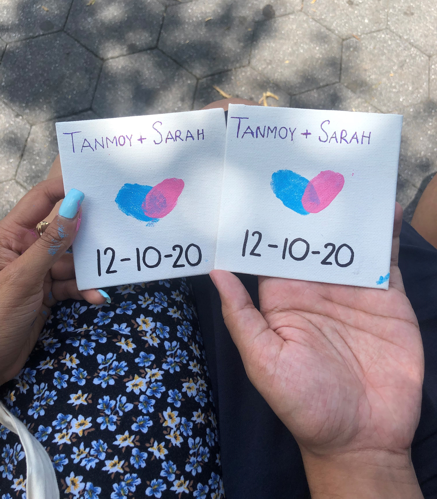

May 25th - May 30th
These 6 days I decided to take a vacation at Peoria, Illinois. My cousin moved out of my aunt's home in Queens to go live in Peoria for her job so I took a trip to help her out. Most of it was buying new furniture and setting up the apartment. This was a great way to get out of the house after school ended.
May 25th
This day was literally filled with traveling and it was so hectic. First I had to wake up at 8am because my dad had something to pick up in Manhattan and he wanted me to go with him. I got ready and ate breakfast. We left home at 8:30 because we had to be there for 9:30 and it takes around 45 minutes to get there. Once we got there, parking was HORRENDOUS. We did what we had to do and then we were on our way back home. We arrived home at about 11:20 and I planned to leave again at 1:20. I did some final packing, rested, called Tanmoy and did my makeup during the meantime. Then it was time to go. My dad and I packed the car and we stopped at Dunkin' Donuts to get 2 bagels. Next we went to pick my mom up from work and we were finally on our way to the airport ✈. The traffic there was SO bad. I was literally freaking out so much thinking I was going to miss my flight. We had a whole prayer session in the car and I calmed down a bit. Once we got to the airport I checked in and printed my boarding pass. Next I went through customs where they scanned me and my things.

That process was really fast but it went well. After that all I had to do was find my gate which was D10. It was quite a walk but I didn't get lost. I sat at the gate at 3:12 and we were going to start boarding the plane at 4:00 so that was perfect. Everything went well, I boarded the plane, put my carry on luggage on top, and sat at my window seat. The flight went amazing as we landed in Chicago earlier than expected and the landing didn't bother my ears that much. Then once I deboarded, I had to find the gate H2 for the next flight to Peoria. That process was also smooth. The Chicago airport is like the one you see in movies. Once I found the gate and knew where I had to be, I decided to explore a bit. I had enough time until boarding so I walked around, saw some Chicago food attractions, bought some tea, and used the restroom. Then it was boarding time again at 6:45 (Illinois time)! This plane was SO small so they checked in my carry on luggage was a valet bag for free. The plane was so small that I couldn't even stand up straight. Crazy. This flight also landed early but we took some time to exit the plane. Once I exited, I got my luggage and I saw my cousin! We drove home and I ate some paneer tikka masala that she cooked for dinner. We talked for a while, I showered and then I was off to bed! Also, Illinois is one hour behind New York so my day was 25 hours long!! It was a very long (literally), busy, hectic, tiring, kinda scary, but fun day!
May 26th
Today once I woke up, I checked my phone for a while and just stayed in bed. Tanmoy and I called for a bit and I gave him a small tour of the apartment. Then I got ready for the day and had waffles and fruits for breakfast. The WiFi guy was coming today so we had to wait for him before we went out. He came, got the job done, and I finally had WiFi!! Then we left home to go get some things for the house. We went to Home Goods first where we got towels, hangers, drinking glasses, and some little things for the kitchen. We barely got anything we wanted so we went to Bed Bath and Beyond. We bought a set of bowls, plates and cups, a trash can, a mirror, a clock, utensils, couch pillows, and some other little things. Next we went to eat at Noodles and Company. I got Pad Thai and my cousin got pesto pasta.
Next we went to the supermarket because we had to cook! We bought some things for breakfast, vegetables, and some baking goods. That was all we needed so we were then on our way back home. We took everything out the bags and set them up around the apartment. Everything fit well and looked nice. We cooked roti and chana for dinner and baked chocolate cupcakes for dessert. Both of us took on our own roles and worked together to make everything.
Once we finished eating everything we got ready to go to East Peoria River Front Park . My cousins boyfriend came over to the apartment for a while to meet me and eat some of the food we cooked. He was really nice and friendly. There wasn't anyone at the river front since it was so late at night. It was very beautiful, quiet, and calm. Then we came back home, showered, and went to sleep.
May 27th

Today we didn't really have much planned because it was supposed to rain. I had a video call with Tanmoy in the morning and I ate cereal and milk for breakfast. My cousin needed sneakers so we went shopping early so we didn't get caught in the rain. First we went to DSW and I got some fancy sandals on clearance that I can wear with some of my dresses. Then we went to Old Navy. My cousin got some clothes but I just got some cute masks. Next we decided to get food at Childers Eatery My cousin got avocado toast and I got chicken chipotle tacos. The food was actually really good. Then we went to JCPenney mainly because there was a Sephora in the store and I needed concealer. We walked around for a bit and we found this nice massage place. We both got 20 minutes massages and it felt so good! Once it was done, we were on our way home. I called Tanmoy for a bit and showed him what I got. Next, we started cooking dinner. Tonight we made pasta and some salad. We set up the TV so we could watch a movie and eat dinner. My cousin's boyfriend came over and we all watched Schitts Creek and ate. He left after a while but my cousin and I continued watching. Once it got late, we showered and went to sleep!
May 28th
Today we planned to drive to Chicago. The drive from Peoria to Chicago is about 2 hours and 45 minutes. We got ready and left home at 11 so we estimated that we would arrive there by 2pm. We arrived in Chicago at about 2:15 because there was a little bit of traffic and it was cold, rainy, and breezy. Our first stop was Batter & Berries where we got brunch. I got an alfredo omelette and hashbrowns and my cousin got french toast with strawberries, blueberries and ice cream. We finished that up at around 3:30. We had a reservation for indoor skydiving at iFly for 4:30 so next we were on our way there. The people were so energetic and friendly. Once it was our turn, we put on the uniforms and helmet and then we had to go into a classroom where they taught us how to position ourselves and what certain hand signals mean. Then we went into the wind tunnel. In the tunnel there is over 100mph of wind rushing to you, which causes you to fly around. You have to stay in a position as if you were laying down on your stomach and completely straight. They let you fly around at a medium height for a while to get used to it and then they let you do the high rise where you fly all the way at the top. You go in with the instructor because if you're not in the correct position, you won't fly properly so he'll be there to hold onto you.
Once that was over, they gave us certificates. Next we went to get gas and were on our way to Garrets Popcorn Shops. Apparently this popcorn shop is really famous in Chicago and is considered their most craveable snack. We got the famous Garret Mix popcorn. Before we left Chicago we wanted to get souvenirs, so we went to a shopping center/mall. We went at around 7 but surprisingly, everything was closed. It was so weird, like a scary movie. 7pm is not that late but the entire mall was dead. So after that, we were on our way home. There were some roads that went for miles without streetlights so everything looked pitch black. There were no other cars on the road to give off some light so it was literally liked were were driving into darkness or nothing-ness. Scary. Overall though, we were vibing, eating popcorn and having karaoke sessions in the car. We finally arrived home and I had a short video call with Tanmoy. Then I showered and ate dinner while we watched some more Schitts Creek. We had cupcakes and went to sleep!
May 29th
 Today we had planned to go on a hike but I woke up with excruciating pain in my right ankle that I could barely walk. I was limping everywhere and it hurt really bad so I put on some pain ointment. We cut up an old shirt, wrapped it around my ankle, and secured it with some safety pins. We ate breakfast, built a drawer for my cousin's room and just chilled. Then we went out to do some little shopping and sightseeing. We went to get scrubs for my cousin to wear to work and then we went to a planetarium. Near the planetarium was Peoria River Front Park museum so we went to their gift shop to get souvenirs. To our surprise there wasn't a lot of nice things so we decided we'll get them at the airport tomorrow. After that we got ice cream and walked along the river front for a while. Then as we were driving back home, we passed by the rich neighborhood in Peoria to see some of the huge houses. We then went to the supermarket to grab some things for dinner and then we came home. We chilled for a while and then I helped her unpack some of her things to put in the drawer that we built in the morning. I video called Tanmoy until it was time to eat. We had veggie burgers for dinner while we watched Schitts Creek. I cleaned up the kitchen and showered. Then we drank some tea, watched some more Schitts Creek and went to bed.
May 30th
This day was CRAZY. I woke up at around 9 and I showered. I got dressed and had a good breakfast. I had two eggs, two waffles, blueberries, and a cup of coffee. We left to go to the airport at around 10:30 because my flight was scheduled for 12:43. When we got to the airport, apparently my flight got delayed to 1:09. This meant that I was arriving in North Carolina at 4:19 instead of the scheduled 3:53. This was a problem because next flight was scheduled for 4:50 and boarding was starting at 4:20. This was cutting things EXTREMELY close and I was freaking out so much thinking that I was going to miss my connecting flight. After a while the flight got rescheduled to 1:02 and was landing at 4:12 which wasn't that much better but was still better. I went through the TSA where they scanned me and everything and once that was over, instead of going straight to my gate, I went to the gift shop. I bought some souvenirs for my family and friends. Then I went to wait at the gate. We boarded late, at around 1:10 which is literally past takeoff time. I was so scared. I knew there was a possibility that I would miss my next flight but a couple minutes into the flight, the American Airlines app sent me a notification saying that I was going to miss it. This was when I started freaking out even more. I opened the app and they said I had a week from today to book a next flight to NY with no additional charge. But when I went to book a next flight, there was none available. All of them were already full flights. This was when I was just telling myself that I was going to be all alone and stuck in North Carolina. About halfway into the flight, the pilot gave an announcement with the estimated time arrival and when I looked back at the app, it said were were now arriving at 4:04. I knew I would have to get off the plane quickly and rush to my gate afterwards, but I felt so much better. The plane landed on time but it took a while to actually deboard. Also, to deboard, they opened the stairs on the side of the plane and we had to walk out onto the runway and then to the airport. Once I got into the airport, I RAN to my gate. I was at gate E7 and I had to get to gate D1. You would think they would be close by but they were on two different sides of the airport. So I literally RAN for my life. I got to the gate at 4:15 so I only had 5 minutes to spare until boarding at 4:20. Thank goodness I made it. I was out of breath and tired but I MADE IT. I boarded the plane, and the flight was very fast and peaceful. Once I deboarded, it was a long walk from the gate to the ground level transportation but it was okay. I saw my mom, dad, and brother waiting for me and all was well. They brought food and water for me and I talked for the entire ride home. Once I got home, I gave everyone their gifts and showered. I chilled for a bit, called Tanmoy, and went to sleep. Very hectic but successful day!
June 7th
 Today Sharmin and I planned to go to the Museum of Illusions. Our tickets were for 3:45pm so we ate lunch beforehand. We got lunch at Westville. It's an American restaurant but their food was good. We had a reservation there for 12:15 and we got there at 12:17 even though we planned to get there at 12. Sharmin got lost and I was having train troubles. I was on the 2 train and all of a sudden it changed to a 5 train with no warning or announcement. We met up at the restaurant and each ordered a grilled chicken breast with 2 sides. Then we got dessert. We got a molten chocolate cake with vanilla ice cream and shared it. We took some photos and then we were off to our next destination. We went to a salvation army thrift shop that was nearby. We spent a good hour in there just looking at clothes and killing time. I didn't get anything but Sharmin got some stuff. Then we went to a CVS just to walk around and talk (and get some ac). We chilled in a small park after that but then we started hearing some really loud thunder. It was 3:30 so we just decided to go to the museum. The entire museum was about a floor and a half but there were a lot of little rooms and cool things. A lot of it had to do with mirrors, colors, 3-D images, shapes, and distortion. We took a lot of photos and had a lot of fun. Once we looked at everything, we went back to the small park and chilled. We talked, exchanged photos, and posted on our instagrams. Then we went to the train station to be back on our way home. It was a calm and fun day!
June 9th
 Tomorrow will make 6 months since Tanmoy and I started dating. I wanted to have a healthy date so it'll be like our 6 months detox. We were both taking the 2 train and transferring to the 1 train so we decided to meet at the transfer point. We met up at 96th street and took the 1 train to 137th street - City College. There was a ~sex~ shop nearby that we wanted to check out so that was our first stop. There were a lot of interesting things there. Then we walked along riverside park. We tried to stay in the shade because the sun is Tanmoy's worst enemy. Crazy. We took a break for a while and I showed Tanmoy the surprise I had for us. I bought 4x4 canvases and I wanted us to paint our fingerprints on it in the shape of a heart. I thought it was really cute. I didn't know if Tanmoy would agree to it because it was hot and messy but he did!! It was really fun and I loved the way they came out. ❤ Then we continued walking along the park to the restaurant. We planned to go to sweetgreen. They sell some great salads and warm bowls. I recommend. I got a salad and Tanmoy got a warm bowl. We went back to riverside park and found a shady place to eat. We wanted a shish kebab from the halal truck so Tanmoy went to get one and we shared it. We walked around the park a bit more and then as we were walking to the train station, we got some bubble tea from Gong Cha. Then we took the 1 train back to 96th street and transferred to the 2 train to go out separate ways. Despite the heat, it was an amazing day. 😘